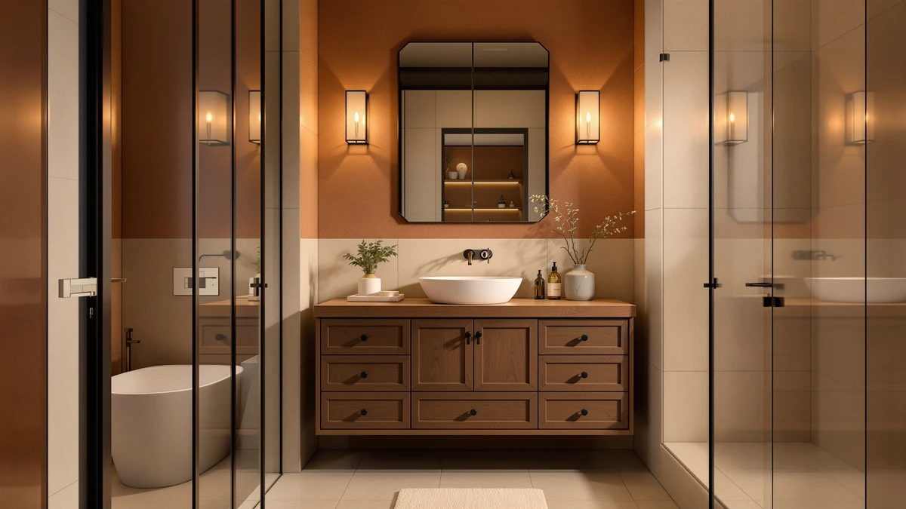

Quick Answer
After comparing specs, pricing, and verified owner reviews across seven bathroom vanity upgrades, the Indoi 4-Light Bathroom Light Fixtures is our top pick for most bathrooms: it delivers bright, even coverage over the mirror for under $40. If you're shopping for a narrower fixture, a faucet, or a full vanity cabinet instead, the Our Picks section below breaks down the best option for each.
Our pick: Indoi 4-Light Bathroom Light Fixtures, $39.98 Check Price on Amazon
Things to Know Before You Buy
- Vanity light fixtures are usually sold by light count (3 or 4 bulbs); more lights generally mean brighter, more even coverage across a wider mirror.
- Check your existing electrical box spacing before buying a fixture. Most bar-style vanity lights need a standard horizontal junction box.
- Faucet flow rate is measured in GPM (gallons per minute); 1.2 GPM is the federal water-saving standard for bathroom faucets.
- Match finishes (matte black, brushed nickel, chrome) across your faucet, hardware, and light fixture for a cohesive look, or intentionally mix metals for a layered style.
- Cabinet-style vanities list their construction material; MDF and engineered wood keep costs down but need the same moisture care as any bathroom furniture.
Shopping for bathroom vanity upgrades means comparing very different kinds of products side by side: light fixtures, faucets, and full cabinets all show up under the same search, and each has its own set of specs that matter. This guide rounds up seven well-reviewed options across those categories so you can compare price, construction, and fit before you buy.
We leaned on verified product listings and owner reviews rather than physical testing (see How We Picked and How We Compared below), and we excluded anything with vague material specs or a pattern of unverifiable five-star ratings.
Prices below range from under $30 for a basic 3-light fixture to just over $400 for a full 36-inch vanity cabinet, so whichever category you're shopping for, there's a pick sized to your budget.
Why You Should Trust Us
This guide is written and maintained by Ilane Tall, who researches and compares bathroom fixtures and furniture full-time for Best Bathroom Vanities. We do not accept free products from manufacturers, and our picks are based on publicly available specs, pricing, and verified owner reviews rather than a physical testing lab. When a listing's marketing claims and its verified reviews disagree, we flag the discrepancy rather than repeat the manufacturer's language.
How We Picked
We started from Amazon's catalog of bathroom vanity lighting, faucets, and cabinetry, then filtered for listings with clear material and dimension specs, since vague listings ("modern style," "premium finish") are hard to compare honestly. We also required a stable listing history and current availability, and we excluded duplicate variants of the same base product. That left the seven picks in this guide, spanning three categories and a wide price range.
How We Compared
We compared each product's listed specs, such as light count, flow rate, or cabinet dimensions, against its product photography and verified owner reviews, since marketing copy and real-world fit don't always match. We weighted verified reviews more heavily than star averages alone, since a 5-star rating built on two reviews carries far less signal than a 4-star average built on dozens. We did not physically install or test any of these products; our comparisons are based on published specifications, pricing, and documented owner feedback.
Our Picks

Indoi 4-Light Bathroom Light Fixtures
What we like
- Four-light layout spreads brightness evenly across wider mirrors, reducing shadows on the face
- Brushed metal frame fits a range of finish schemes without clashing
- Priced under $40, among the more affordable 4-light fixtures we compared
Flaws but not dealbreakers
- Four bulbs draw more power than 3-light fixtures, so check the fixture's wattage rating against your bulbs
- The wider bar needs enough horizontal wall space above the mirror to mount cleanly
| Material | MDF / engineered wood |
| Size | 4-light |
The Indoi 4-Light Bathroom Light Fixtures earns our top pick mainly on coverage for the price. Four evenly spaced lights throw more consistent brightness across a wider mirror than the 3-light fixtures in this guide, which matters most for grooming tasks like shaving or applying makeup, where shadows are the enemy. At $39.98, it undercuts most 4-light fixtures we compared while still using a brushed metal frame that works with multiple finish schemes.
Because it draws power across four bulbs instead of three, it's worth checking the fixture's maximum wattage rating against whatever bulbs you plan to install, especially if you're swapping in brighter LED equivalents. It also needs a wider stretch of wall above the mirror than the narrower fixtures in this lineup, so measure before you buy if your vanity is on the smaller side.

Ascher Bathroom Vanity Light Fixtures
What we like
- Frosted shades diffuse light more softly than open bulbs
- Narrower footprint fits smaller mirrors without overwhelming the wall
- Lower price than our top pick while still covering most single-sink setups
Flaws but not dealbreakers
- Three lights provide less total brightness than our 4-light top pick
- Frosted shades make it harder to notice bulb color-temperature differences at a glance
| Material | MDF / engineered wood |
| Size | 3 Light |
The Ascher Bathroom Vanity Light Fixtures is the pick for anyone whose mirror is on the smaller side. Its 3-light layout and frosted shades diffuse light more softly than bare bulbs, which some buyers prefer for everyday use even if it's a step down in raw brightness from a 4-light fixture.
At $34.19 it's one of the more affordable options here, and the narrower bar means it fits mirrors in the 24 to 36 inch range without the wall space a 4-light fixture demands. If your bathroom is compact, this is the more proportionate choice.

Ascher Bathroom Light Fixtures 4-Light
What we like
- 4-light layout matches our top pick's brightness at a comparable price
- Wider frosted shades spread light across a broader area
- Same-brand reliability as our runner-up for buyers who want a matching set
Flaws but not dealbreakers
- Very similar spec sheet to our top pick, so there's little reason to choose it unless you prefer this shade style
- Still needs the same wider wall clearance as any 4-light fixture
| Material | MDF / engineered wood |
| Size | 4-Light |
The Ascher Bathroom Light Fixtures 4-Light is close enough to our top pick in specs and price that the choice mostly comes down to shade style. It uses wider frosted shades than the Indoi, which spreads light slightly more broadly but also softens it a touch more.
At $39.99, it's a cent more than our top pick, and buyers who already have an Ascher fixture elsewhere in the home may prefer it for a matching look. Otherwise, treat it as a close alternative rather than a clear upgrade.

A1A9 3-Light Bathroom Vanity Light
What we like
- At 17.8 inches wide, it's the most compact fixture we compared, fitting tighter mirror widths
- 3-light layout keeps power draw and installed cost lower
- Compact size makes it easier to center on narrow mirrors
Flaws but not dealbreakers
- Smaller size means less total light output than the wider 4-light fixtures in this guide
- At $39.98, it's priced the same as some 4-light options despite having fewer bulbs
| Material | MDF / engineered wood |
| Size | 10" x 17.8" x 5.9" |
The A1A9 3-Light Bathroom Vanity Light is built for bathrooms where space, not brightness, is the limiting factor. At roughly 17.8 inches wide, it's the most compact fixture in this guide, which makes it a better match for narrower mirrors and single-sink vanities under about 30 inches.
It's priced at $39.98, which puts it on par with some 4-light fixtures here despite having one fewer bulb, so it's worth choosing this one specifically for its size rather than its price. If your mirror is wider than about 30 inches, one of the 4-light options will likely serve you better.

Unicozin Modern Bathroom Light Fixtures
What we like
- Lowest price of any fixture in this guide at $29.99
- Simple cylindrical shades fit a range of bathroom styles without standing out
- 3-light layout covers most single-sink mirrors adequately
Flaws but not dealbreakers
- Cheapest build in the lineup, so hardware and finish may feel less substantial than pricier picks
- Fewer finish options reported by buyers than the Ascher fixtures
| Material | MDF / engineered wood |
| Size | 3 Light |
The Unicozin Modern Bathroom Light Fixtures is the budget option in this guide, priced under $30 while still covering a standard single-sink mirror with three lights. Its cylindrical shades keep the look simple enough to fit most bathroom styles without drawing attention.
The tradeoff for the lower price is a build that feels less substantial than the pricier Ascher or Indoi fixtures, according to buyer feedback, and finish options are more limited. It's a reasonable choice if price is the deciding factor, but step up to one of the other picks if you want sturdier hardware.

Delta Modern Matte Black Bathroom
What we like
- Matte black finish pairs well with modern hardware and fixtures
- 1.2 GPM flow rate meets the federal water-saving standard without feeling restrictive, per buyer feedback
- Delta's established reputation for faucet reliability and parts availability
Flaws but not dealbreakers
- At $84.00, it's the most expensive single fixture in this guide outside the full vanity cabinet
- Matte black finishes show water spots more visibly than chrome if not wiped down regularly
| Material | MDF / engineered wood |
| Size | 1.2 GPM Water Flow |
The Delta Modern Matte Black Bathroom faucet is the one product in this guide that isn't a light fixture, and it's here for buyers who are furnishing a vanity from the ground up. It's a single-handle design with a 1.2 GPM flow rate, which meets the federal water-saving standard for bathroom faucets while still delivering adequate pressure according to buyer feedback.
At $84.00 it costs more than any single light fixture in this guide, but Delta's reputation for parts availability and long-term reliability helps justify the premium. The matte black finish pairs well with black or brushed hardware elsewhere in the bathroom, though it will show water spots more readily than a polished chrome finish if it isn't wiped down regularly.

Tribesigns 36 Inch Bathroom Vanity
What we like
- Full 36-inch cabinet gives significantly more storage than any fixture-only pick in this guide
- Engineered-wood construction keeps the price well under custom cabinetry
- Soft-close hardware, a feature typically reserved for pricier vanities
Flaws but not dealbreakers
- At $407.64, it's by far the most expensive product in this guide
- Cabinet-only pricing may not include a countertop, sink, or faucet, so check the listing before you buy
| Material | MDF / engineered wood |
| Size | 36'' |
The Tribesigns 36 Inch Bathroom Vanity is for a different kind of shopper than the rest of this guide: instead of upgrading a single fixture, it's a full 36-inch vanity cabinet for a bathroom remodel. Engineered-wood construction keeps the price below custom cabinetry, and soft-close hardware is a detail more often found on pricier units.
At $407.64, it costs roughly five times more than the priciest light fixture here, so it only makes sense if you're actually replacing the cabinet rather than just the lighting or faucet above it. As with most listings in this price range, double-check whether the countertop and sink are included or sold separately before you order.
Quick Comparison
| Product | Material | Price | Rating | Best for | Get it |
|---|---|---|---|---|---|
| Indoi 4-Light Bathroom Light Fixtures | MDF / engineered wood | $39.98 | 4 | Wider mirrors needing brighter, even light | View on Amazon → |
| Ascher Bathroom Vanity Light Fixtures | MDF / engineered wood | $34.19 | 4 | Smaller mirrors, 24 to 36 inches | View on Amazon → |
| Ascher Bathroom Light Fixtures 4-Light | MDF / engineered wood | $39.99 | 4 | Buyers who want a matching Ascher set | View on Amazon → |
| A1A9 3-Light Bathroom Vanity Light | MDF / engineered wood | $39.98 | 4 | Compact vanities under 30 inches | View on Amazon → |
| Unicozin Modern Bathroom Light Fixtures | MDF / engineered wood | $29.99 | 4 | Tightest budget | View on Amazon → |
| Delta Modern Matte Black Bathroom | MDF / engineered wood | $84.00 | 4 | Shoppers who need a faucet, not a light | View on Amazon → |
| Tribesigns 36 Inch Bathroom Vanity | MDF / engineered wood | $407.64 | 4 | Full cabinet replacement | View on Amazon → |
The Competition
Frequently Asked Questions
How many lights does my vanity mirror need?
As a rule of thumb, three lights work for mirrors up to about 30 inches wide, and four lights are worth the extra width and cost for mirrors from 30 to 48 inches. More lights spread brightness more evenly across the face, which matters more than raw lumen output for everyday grooming tasks.
What does a faucet's GPM rating mean?
GPM stands for gallons per minute, the rate at which water flows through the faucet. The federal standard for bathroom faucets is 1.2 GPM, which balances water savings with enough pressure for normal use. A lower GPM rating saves more water but can feel weaker during rinsing.
Do my faucet and light fixture finishes need to match?
Not necessarily. Matching finishes creates a more cohesive look, but mixing two complementary metals, like a matte black faucet with brushed nickel lighting, is a common and intentional design choice. The main thing to avoid is three or more different finishes competing for attention in the same small space.